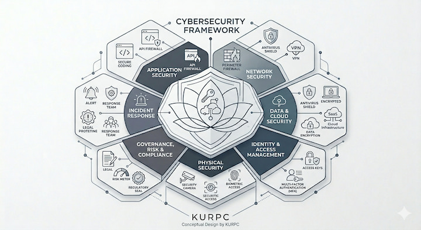

PC Security Tips Guide
Protecting Your Digital Fortress
In today's interconnected world, securing your PC is more important than ever. From safeguarding personal information to defending against cyber threats, implementing strong security practices is essential to protect your digital fortress. This guide provides practical tips and strategies to help you enhance the security of your PC and keep your data safe.
By following these security tips, you can significantly reduce the risk of cyberattacks and ensure that your PC remains a safe and secure environment for your digital activities.
Whether you're a casual user or a tech enthusiast, these security practices will help you build a robust defense against potential threats and keep your PC secure in an ever-evolving digital landscape.

Security
Keeping your PC secure is essential in today's digital landscape. Here are some key security practices to follow:
- Use strong, unique passwords for all accounts and consider using a password manager.
- Enable two-factor authentication (2FA) wherever possible for an extra layer of security.
- Keep your operating system and software up to date to patch vulnerabilities.
- Be cautious of phishing attempts and avoid clicking on suspicious links or attachments.
- Use reputable antivirus and anti-malware software to protect against threats.
- Regularly back up important data to an external drive or cloud storage.
Physical Security
In addition to digital security, physical security is also important to protect your PC from theft or damage. Consider the following tips:
- Keep your PC in a secure location and consider using a lock if necessary.
- Use surge protectors to protect against power surges and electrical damage.
- Avoid eating or drinking near your PC to prevent spills and damage.
- Regularly clean your PC to prevent dust buildup, which can cause overheating.
Network Security
Securing your network is crucial to protect your PC and personal information. Here are some network security tips:
- Use a strong, unique password for your Wi-Fi network and consider changing it regularly.
- Enable WPA3 encryption on your router for enhanced security.
- Disable remote management on your router to prevent unauthorized access.
- Regularly update your router's firmware to patch security vulnerabilities.
Data Privacy
Protecting your data privacy is essential in today's digital world. Consider the following tips to safeguard your personal information:
- Be mindful of the information you share online and adjust privacy settings on social media platforms.
- Use a virtual private network (VPN) when connecting to public Wi-Fi networks to encrypt your internet traffic.
- Regularly review app permissions and revoke access for apps that don't need it.
- Consider using encrypted messaging apps for sensitive communications.
Backup and Recovery
Having a backup and recovery plan is crucial to protect your data in case of hardware failure, malware attacks, or other issues. Here are some tips for backup and recovery:
- Regularly back up your important files to an external drive or cloud storage service.
- Use automated backup solutions to ensure your data is consistently backed up without manual intervention.
- Test your backups regularly to ensure they can be restored successfully.
- Consider using versioning for backups to keep multiple versions of your files in case you need to revert to an earlier version.
Safe Browsing Habits
Developing safe browsing habits is essential to protect your PC from online threats. Here are some tips for safe browsing:
- Use a reputable web browser with built-in security features and keep it updated.
- Be cautious when downloading files and only download from trusted sources.
- Avoid clicking on pop-up ads or suspicious links, as they may lead to malware infections.
- Use browser extensions that enhance security, such as ad blockers and anti-tracking tools.
Email Security
Email is a common vector for cyberattacks, so it's important to practice good email security habits. Here are some tips for email security:
- Be cautious of email attachments and only open attachments from trusted sources.
- Avoid clicking on links in unsolicited emails, as they may lead to phishing sites.
- Use email filtering tools to help identify and block spam and malicious emails.
- Consider using encrypted email services for sensitive communications.
Mobile Device Security
Mobile devices are increasingly targeted by cybercriminals, so it's important to take steps to secure your smartphone or tablet. Here are some tips for mobile device security:
- Use a strong passcode or biometric authentication to lock your device.
- Keep your operating system and apps updated to patch security vulnerabilities.
- Be cautious when downloading apps and only download from reputable sources.
- Use mobile security apps that offer features like anti-malware and remote wipe capabilities.